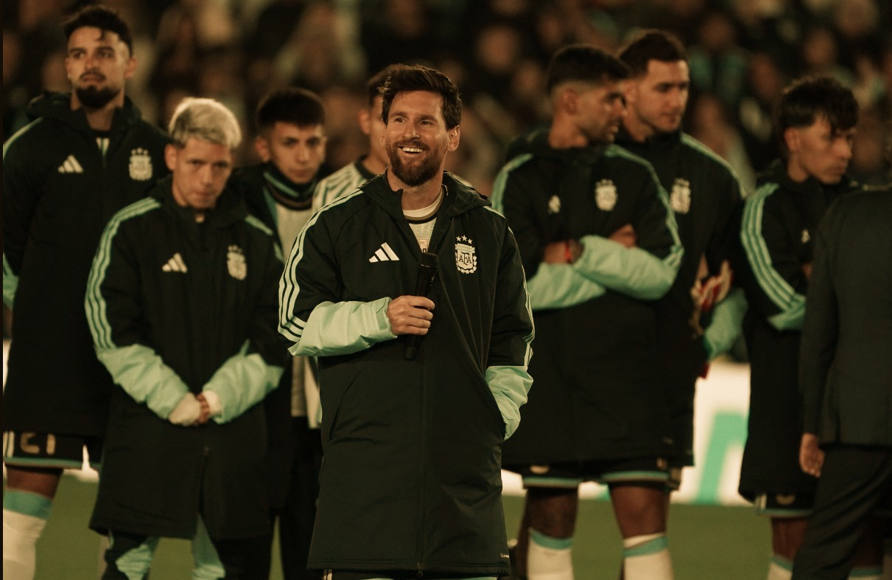
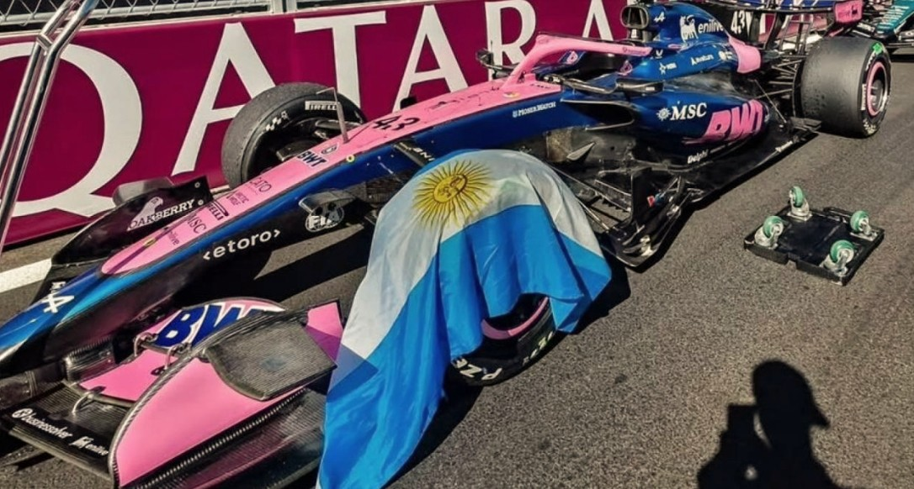

FÚTBOL
Análisis · Actualidad
Mucho más que un resultado
El juego, las decisiones, las estadísticas y las historias que explican lo que pasa dentro de la cancha.
Noticias, análisis y relatos para descubrir lo que pasa dentro y fuera de la cancha. Un espacio independiente para vivir el deporte de otra manera.
Explorá TDeportes ↘
El juego, las decisiones, las estadísticas y las historias que explican lo que pasa dentro de la cancha.
Del hockey al vóley, del rugby al básquet: competencias, protagonistas y deporte amateur.

Pilotos, equipos, estrategia, neumáticos y rendimiento para entender cada fin de semana.
Crónicas, entrevistas y perfiles de las personas que hacen del deporte una pasión: protagonistas, esfuerzo y sueños.
Iniciativas, inclusión y oportunidades dentro y fuera del juego. Porque el deporte también puede abrir caminos y transformar vidas.